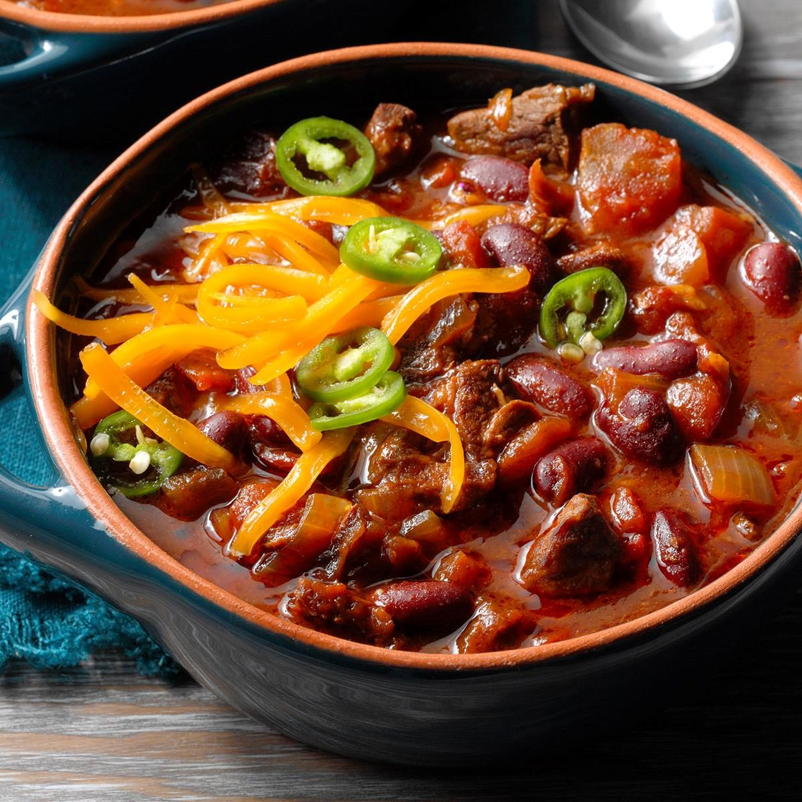

Chili

Description
This delicious chili is easy to make and sure to be a crowd pleaser. Great for potlucks, family gatherings, and even just a friday dinner.
As always, I recommend playing around with seasonings and such. Cooking is about finding your own ways to create delicious dishes, and creativity is always encouraged.
Ingredients
- Ground beef
- Tomato products
- Seasonings
- Onions
- Garlic
- Peppers
- Shredded Cheese
Steps
- Brown the beef
- Chop your onion and pepper, and mince your garlic
- Drain your beef
- Mix your beef, veggies, tomatoes, and seasonings in your slow cooker
- Cook on high for 3 hours or low for 6 hours
- Serve with some shredded cheese on top